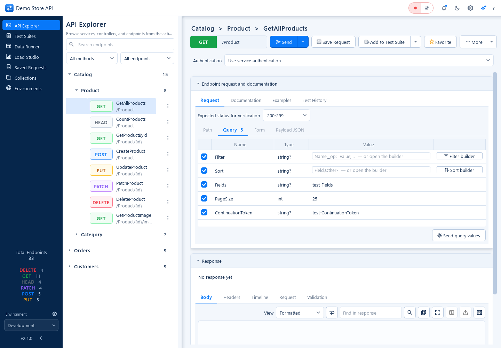
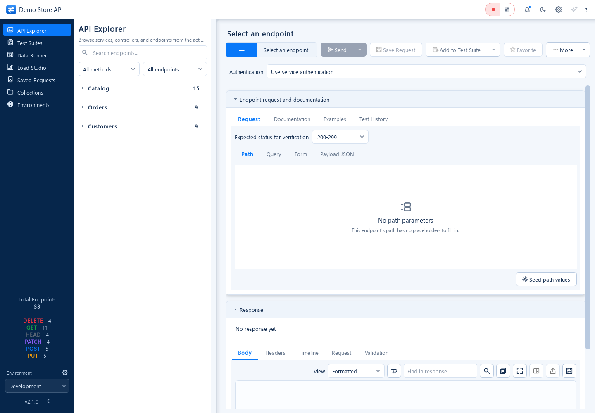
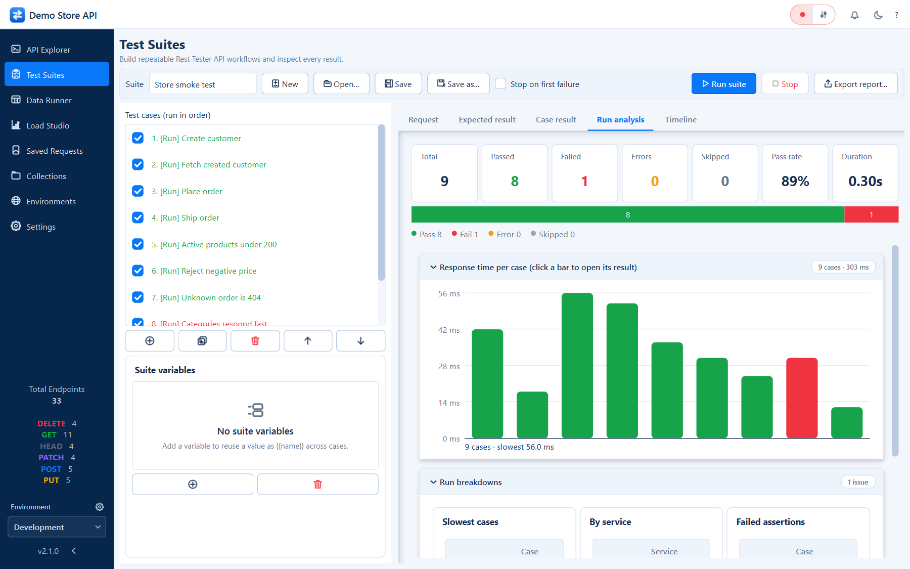
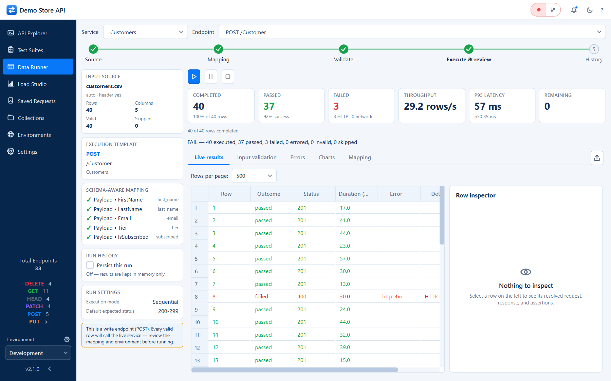
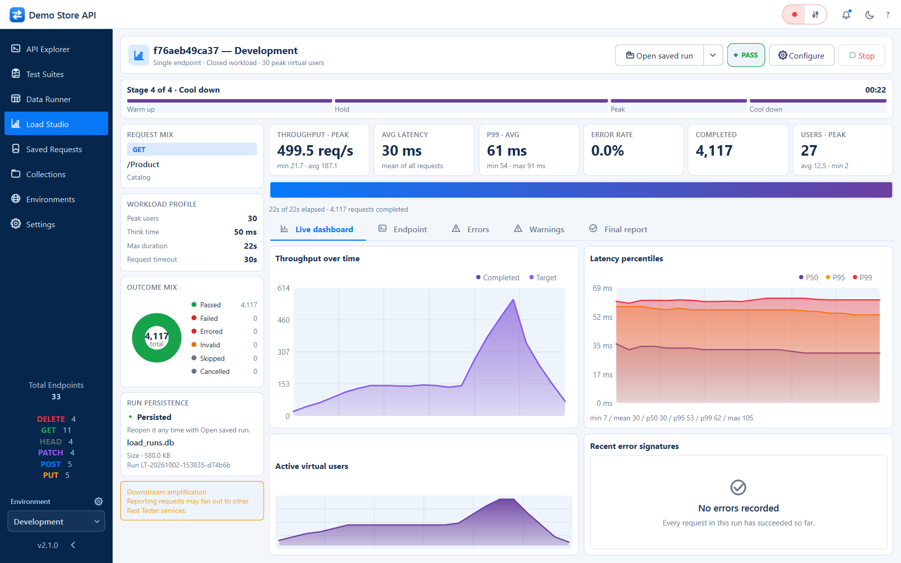
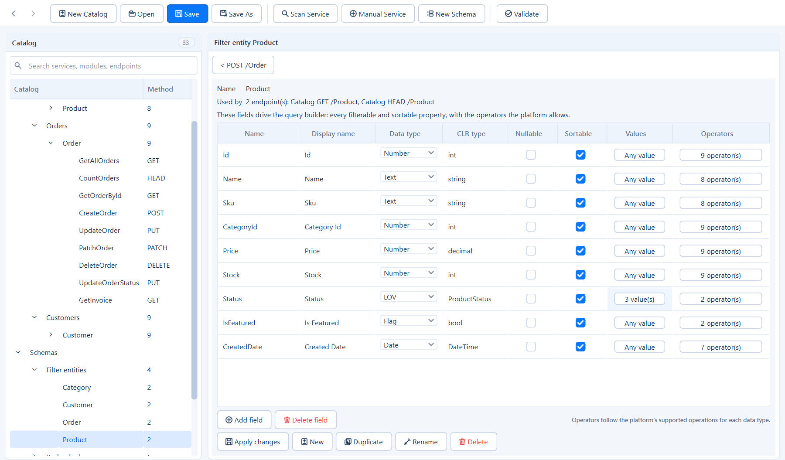
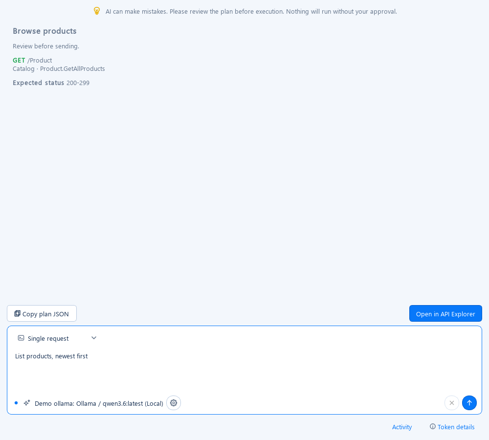

Installation
Rest Tester runs from source on Windows, macOS and Linux. You need Python 3.11 or newer and Git.
git clone https://github.com/priyankdalal/rest-tester.git
cd rest-tester
python -m venv .venv
.venv\Scripts\activate # Windows
source .venv/bin/activate # macOS / Linux
pip install -r requirements.txt
python run.pyRuntime dependencies are PyQt6, requests, MSAL and msal-extensions, PyJWT and cryptography. The Catalog Builder can also be launched on its own with python run_builder.py.
Quick start with the demo API
The repository ships a small, dependency-free Store API so you can try every feature without a real backend. It serves products, categories, customers and orders with seeded data, and supports filtering, sorting, paging, field selection, JSON Patch, HEAD counts, problem+json validation errors, file downloads and image responses.
python examples/demo_store_server.py # http://127.0.0.1:8765
python examples/demo_store_server.py --port 9000 --quiet- Start Rest Tester with
python run.py. - Open Settings → API catalog → Load catalog... and choose
examples/store_catalog.json. - Base URLs are pre-filled from the catalog (for example
http://127.0.0.1:8765/catalog/v1/). Change them under Environments if you used another port. - In API Explorer, pick
GET /Productunder Catalog and click Send. - Open the
Filterrow's builder on the Query tab and try a filter.
API Explorer
The endpoint tree on the left is grouped by service and supports search (Ctrl+L), method and scope filters, favourites and recent endpoints. Each endpoint has Request, Documentation, Examples and Test History tabs.
| Tab | Purpose |
|---|---|
| Path | Path parameters with typed editors and catalog defaults. |
| Query | Query parameters. Filter and Sort rows open the filter and sort builders. |
| Form | multipart/form-data fields. File fields get a Browse... button. |
| Payload JSON | The raw body. Payload fields opens a schema-driven form that writes back to the JSON. |
Header actions
- Send issues the request; its drop-down offers Send and Verify (Ctrl+Enter), which validates against the response schema.
- Add to Test Suite captures the request as a case; its drop-down also offers Open in Load Studio and Open in Data Runner.
- Save Request and Favorite keep requests in Saved Requests and Collections.
- More offers Generate cURL, Generate Python Request and Copy URL.
Seed data
Seeding fills payloads and filters with realistic, type-aware values: fresh UUIDs for GUID fields, ISO dates, real enum members only, two values for bt, several for in / nin and a substring fragment for ct, sw and ew.
Response viewer
Body, Headers, Timeline, Request and Validation tabs. JSON is syntax-highlighted and searchable, images are previewed and downloads can be saved. The timeline breaks each call into a DNS, TCP connect, TLS and HTTP waterfall.

Without a selected endpoint, request actions are disabled. Disabled split buttons use a neutral appearance without the active blue dropdown divider.

Test Suites
A suite is an ordered list of cases. Each case pins one endpoint with its parameters, payload, expected status and assertions. Any number of cases can target the same endpoint.
| Group | Assertions |
|---|---|
| Body | contains / does not contain text, matches regex |
| JSON | field equals / not equals / contains, exists / absent, not empty, length equals / at least / at most, type is |
| Headers | header equals, header exists |
| Timing | responds within N ms |
| Schema | matches the endpoint's response schema |
Cases can be renamed, duplicated, reordered and individually disabled. A run produces a run analysis, a detailed result per case and a timeline waterfall. Suites are plain JSON files in suites/.

Data Runner
Executes one endpoint once per row of a CSV file, as a step-by-step wizard:
- Source - pick the service and endpoint (type-ahead search) and load a CSV file.
- Mapping - bind columns to path, query, header and payload fields; matching names map automatically and values can be parsed as JSON.
- Validate - preview resolved requests and catch type or required-field problems before sending.
- Execute & review - run with configurable concurrency and inspect each row's status, timing and response; export the results.
- History - reopen earlier executions.
Every execution is a portable SQLite run file that can be loaded back later.

Load Studio
- Configure - choose the endpoint with type-ahead search and build a profile from ramp-up, steady and ramp-down stages with think time.
- Safety & Thresholds - cap peak virtual users, scenario duration and request timeout, then set pass/fail thresholds such as error rate, P95 or P99 latency.
- Live & Results - a live dashboard of throughput, average latency, P99, errors, completed requests and active virtual users, with charts and per-stage progress. Once the run finishes the cards show min / avg / max.
The final report breaks down every metric, highlights shortcomings and suggests likely causes and fixes. It can be exported to PDF with charts and tables, and runs can be persisted to SQLite and reopened from the Live & Results title bar.

Catalog Builder
Open it with python run_builder.py or Settings → Open Catalog Builder. It covers services and base URLs; endpoints with method, route and content types; path, query, header and form parameters with allowed values; payload and response schemas with enums, nested objects and arrays; and filterable and sortable fields.
It can also generate a catalog by statically scanning ASP.NET Core repositories with python -m tools.generate_catalog. Use Alt+← / Alt+→ to go back and forward through visited items.

The API catalog format
A catalog is a single JSON file. An abridged example:
{
"schema_version": 2,
"name": "Demo Store API",
"services": [
{
"name": "Catalog",
"default_base_url": "http://127.0.0.1:8765/catalog/v1/",
"filter_sort_builders": true,
"endpoints": [
{
"id": "f76aeb49ca37",
"service": "Catalog",
"controller": "Product",
"method": "GET",
"path": "/Product",
"parameters": [
{ "name": "Filter", "source": "query", "type": "string?", "required": false },
{ "name": "Sort", "source": "query", "type": "string?", "required": false },
{ "name": "PageSize", "source": "query", "type": "int", "required": false, "sample": 25 }
],
"payload": null,
"filter_entity": "Product",
"expected_status": "200-299"
}
]
}
],
"filter_schemas": { "Product": { "...": "filterable / sortable fields" } },
"payload_schemas": { },
"form_schemas": { },
"response_schemas": { },
"enums": { }
}The top-level schema maps hold reusable definitions that endpoints reference by name. See examples/store_catalog.json for a complete catalog.
Environments and authentication
| Tab | Contents |
|---|---|
| Base URLs | one URL per service in the loaded catalog |
| Variables | name/value pairs substituted into requests |
| Custom headers | name/value pairs; Authorization and x-api-key have one-click presets |
| Transport | TLS verification and request timeout |
| Authentication | managed credential profiles, service bindings, sign-in and renewal |
- Microsoft identity (MSAL) - Entra ID browser sign-in (PKCE), Azure AD B2C, client credentials.
- Generic OAuth 2.0 - authorization code + PKCE, client credentials, device code, resource owner password, refresh token.
- Static credentials - bearer token, API key (header or query), Basic, JWT bearer (signed locally) and Atlassian ASAP.
Keep secrets out of version control. Static credentials such as API keys, bearer tokens and custom headers are stored in plain text in data/settings.json.
Ask AI
Use the header sparkles icon or Ctrl+K to draft a Single request, Test Suite, Data Runner mapping or Load Testing profile. Configure named Ollama, Azure OpenAI, OpenAI, Claude or Sarvam AI profiles in Settings → AI Settings.
Plans are validated against the catalog. Open transfers a draft; only the native Send or Run executes. CSV planning sends headers, not rows, and load handoff clears execution approvals.
Read the complete AI guide for provider setup, examples, privacy, Activity, token caps, persistent usage and troubleshooting. A 40-page illustrated PDF explains the implementation.

Local data storage
| Data | Location | Notes |
|---|---|---|
| Settings and environments | data/settings.json | Catalog path, theme and environment profiles. |
| History, saved requests, collections | data/workspace.db | SQLite; history older than 100 days is pruned automatically. |
| Test suites | suites/*.json | Plain JSON, friendly to version control. |
| Data Runner / Load Studio runs | *.db files you choose | One portable SQLite file per run; never pruned. |
| AI profiles | data/ai_settings.json | Named connections and planning options; AI keys are stored separately. |
| AI credentials | data/ai_credentials/ or configured environment variable | Protected credential storage; never publish this directory. |
| AI usage | data/ai_usage.db | Metadata-only SQLite ledger, not prompts, raw replies or provider-wide billing. |
In a packaged build these folders are created next to the executable, which keeps the app portable.
Keyboard shortcuts
| Shortcut | Action |
|---|---|
| Ctrl+Enter | Send and Verify the current request |
| Ctrl+L | Focus the endpoint search |
| Alt+← / Alt+→ | Back / forward through visited items (Catalog Builder) |
Building a standalone executable
pip install -r requirements-dev.txt
pyinstaller --noconfirm --clean RestTester.specThe build is written to dist/RestTester/; keep the whole folder together because it contains the Qt runtime. The application icon is generated at build time by python -m tools.make_icon. The packaged build ships without a catalog: on first launch the explorer explains how to load one from Settings or create one in the Catalog Builder.
Running the tests
pip install -r requirements-dev.txt
# Headless Qt (Windows PowerShell)
$env:QT_QPA_PLATFORM = "offscreen"
$env:QT_QPA_FONTDIR = "C:\Windows\Fonts" # real font metrics for layout tests
python -m pytest # full suite, parallel via pytest-xdistOn macOS or Linux use export QT_QPA_PLATFORM=offscreen and point QT_QPA_FONTDIR at a system font directory such as /usr/share/fonts.
FAQ
Is Rest Tester free?
Yes. It is free and open-source software under GPL v3.0 or later, with no workbench account or subscription. Optional hosted AI uses your own provider connection and may incur provider charges; local Ollama has no cloud API charge.
Which operating systems are supported?
Rest Tester runs from source on Windows, macOS and Linux with Python 3.11 or newer. A standalone Windows executable can be built with PyInstaller.
Do I need a real API to try it?
No. The repository ships a dependency-free demo Store API (examples/demo_store_server.py) and a matching catalog (examples/store_catalog.json).
Where is my data stored?
Locally: settings in data/settings.json, history and saved requests in data/workspace.db, suites in suites/*.json, and each Data Runner or Load Studio run in its own SQLite file.
Can the catalog be generated automatically?
Yes, for ASP.NET Core services: python -m tools.generate_catalog statically scans controllers, routes, DTOs and entity attributes. Any other API can be described in the Catalog Builder.